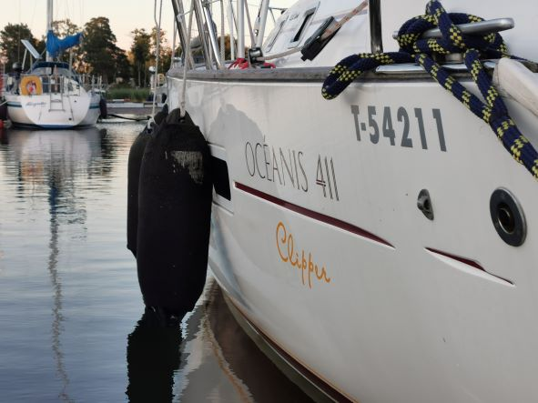

Sail Amanda
Veneilyä Turun saaristossa
Sail Amanda luo pintaraapaisun Benetaun 411 veneeseen, joka on kastettu S/y Amandaksi ja esittelee sen toimintaympäristöä kesäisessä Turun saaristossa
Täkeimmät työkalut purjehtiessa
- Pelastusliivit
- Sään mukainen varustus
- Hyvä asenne